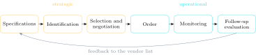

Definition
In B2C the buyer is the final consumer; in B2B the transaction is between organizations and the goods/services are used in production. Purchasing is a support activity of Porter's value chain that feeds all primary activities. Every actor adds value: a discounter cannot keep low prices without competitive suppliers; Apple cannot offer high quality unless its suppliers and intermediaries guarantee it.
Share of purchases on revenue (Kluge 1996): retail 60–85%, computers 60–80%, vehicles 60–80%, consumer electronics 50–70%, pharmaceuticals 25–50%, services 10–40%. Typical structure of spend: raw materials and components 50%, capex 18%, merchandise 12%, services 12%, admin 5%, spare parts 3%.
Model
B2B vs B2C
| B2B feature | Meaning |
|---|---|
| Professional purchasing | organizations, formality, longer times |
| Derived demand | no direct relation with the end user |
| Inelastic demand | low price elasticity in the short run |
| Large orders | large sums of money |
| Deep product knowledge | rational approach |
| Few, concentrated customers | industrial districts |
| Fewer customers/intermediaries | personal selling, direct contact |
| Also | e-commerce, reciprocity, varied contracts, |
| complex financing, evolving relations |
Problems: high complexity and uncertainty → risk (time, money, frustration); several units involved with different interests. Interactive purchasing: buyer and seller interdependent; the market is a network of relations among organizations (Ford); long-term relations in a complex network; every relation is affected by the whole network, not only the dyad (Håkansson). Buyer (purchasing dept.) and sales manager each bring objectives, resources, constraints, problem solving and people.
The six phases
| # | Phase | Type |
|---|---|---|
| 1 | Specification definition | strategic |
| 2 | Supplier identification/qualification | strategic |
| 3 | Selection and negotiation | strategic |
| 4 | Order issue | operational |
| 5 | Order monitoring (expediting) | operational |
| 6 | Follow-up and supplier evaluation | operational |
Steps are tightly linked: the output quality of each feeds the next — purchases often exceed half the product's value, so GIGO (garbage in, garbage out). Strategic phases involve more decision makers, need more information and affect other units.
- Specifications: characteristics (life, technical features), especially for custom items; medium/long-term requirements — direct materials from finished products through the bill of materials, indirect from historical data.
- Identification: pre-selected list from internal (supplier database) and external information (internet, fairs, request for information); audits or questionnaires → register of qualified suppliers. Walmart lets suppliers apply on an online portal. Supplier hierarchy: potential → approved/qualified → preferred (pre-qualification, evaluation criteria, ranking → vendor list).
- Selection: requests for quotation; evaluate offers with vendor grid, TCO, AHP; plus make-or-buy and supplier location. Negotiation fixes cost, delivery, penalties; AI increasingly simulates buyer behaviour.
- Order: supplier accepts and confirms delivery date and quantity changes.
- Monitoring: expediting (follow and chase progress), inspection visits, order tracking (supplier sends production/logistics progress, like a parcel tracker).
- Post-purchase: complaints, assistance, spare parts, archive updates; evaluation of supplier performance → corrective actions. BLM shares its production status with suppliers on a portal and monitors their orders in real time, with shared KPIs on collaboration quality.
Example
A machine builder needs a new laser source: it writes specifications from the BOM, finds five suppliers at a fair, audits three, requests quotes, rates them with a vendor grid and TCO, negotiates penalties for late delivery, issues the order, tracks it weekly and finally scores on-time delivery and defects.
Pitfall
Purchasing is not just ordering: the value is decided in phases 1–3. Derived demand means a B2B buyer's volumes follow its customers' demand.
Recall
List eight B2B features; draw the six phases marking strategic/operational; explain GIGO and the supplier hierarchy.
Picture

Quality of the early strategic phases bounds the whole process.